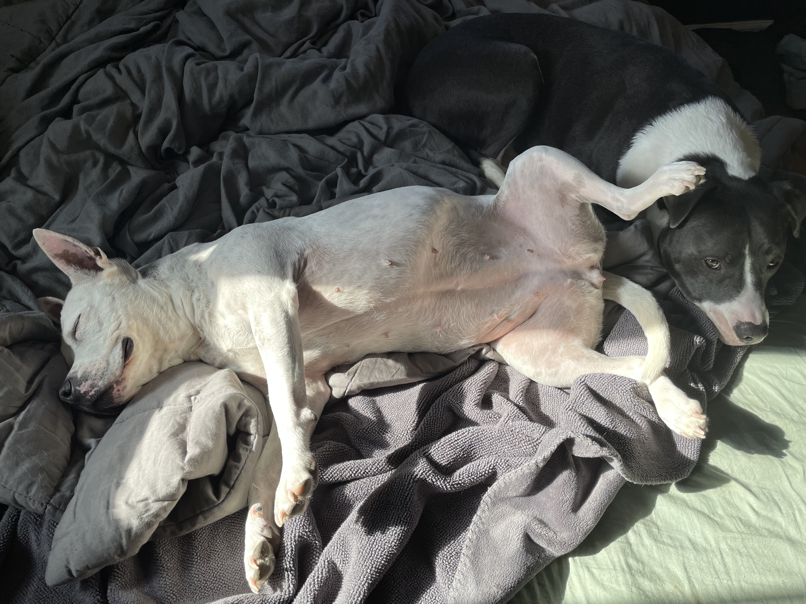

Gateway Pet Guardians
Both Beebo and Fry were adopted from Gateway Pet Guardians. Check out the links below for information about the organization, adopting, fostering, and donating!
Beebo |
Fry |
|---|---|
Beebo was adopted in 2017 by her humans. Her former name was Esmerelda which certainly matches her sass, but didn't quite fit her lovable nature. Hence, she was named after a cartoon alien beast residing on the planet Venzenulon 7 who demonstrated great loyalty, friendship, and sacrifice. Beebo (the dog) loves cheese, laying belly up in the sun, chasing bunnies, and becoming one with couch. Alternate names given to Beebo
|
Fry was adopted in 2019 by his humans. His former name was Chris. Just Chris. Therefore, he was named after a goofy, yet big hearted cartoon character cryogenically frozen seconds into the year 2000, having fallen in just as 1999 ended, then revived in 2999 to became a Delivery boy for the Planet Express Company. Fry (the dog) loves wiggling like a worm, all things rope, peanut butter, and his sister Beebo who tolerates him. 
Alternate names given to Fry
|
Both Beebo and Fry were adopted from Gateway Pet Guardians. Check out the links below for information about the organization, adopting, fostering, and donating!